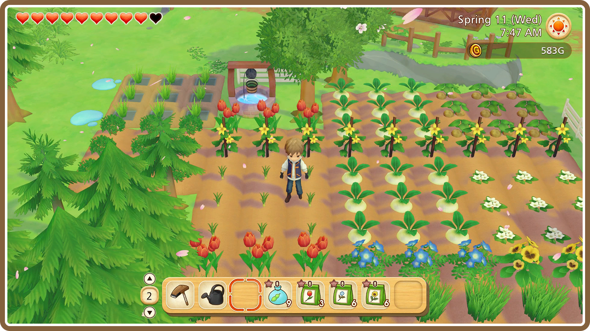
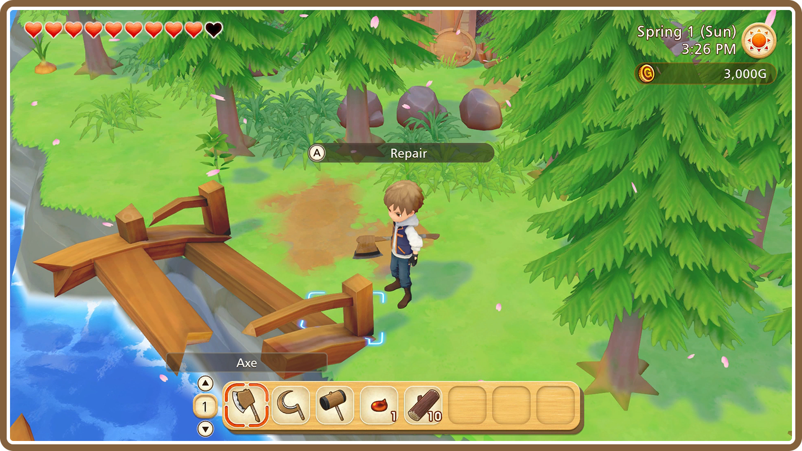

As you begin your life out on your grandfather's old farm, you will have the chance to pick up where he left off. Keep developing the land, grow and harvest crops, and raise all sorts of livestock! You're also free to chat up the other people in town, redecorate the interior of your house, and beautify the farm as you please. It's up to you how you want to spend your time in Olive Town, so kick back and take things at your own pace!
There's always something to do on the farm! By planting seeds, cultivating mushrooms, making honey, and raising livestock, you'll find yourself with a healthy supply of crops and byproducts. These can be sold off to make a tidy profit, or can even be used for crafting and cooking recipes.

- Seasons, Time, and the Weather
-
There are four seasons (Spring, Summer, Autumn, Winter), four different times of day (Morning, Afternoon, Evening, Night), and a total of five different kinds of weather (Sunny, Rain, Snow, Typhoon, and Blizzard.) The seasons determine what kinds of crops you can grow, while shops will only be open at certain times of day.
After years of neglect, you'll find that the facilities on the farm are in a state of disrepair, and debris might even block your path. It's up to you to fix or clear things out to gain more farmland and expand on what you can do there. Renovating your house also grants you access to new features, such as the ability to own pets.


Listening to the mayor's requests and speaking with the residents all contribute to making Olive Town into an even better place to live! Things will start to get more lively as town development breathes new life into the streets, and your farming ventures help expand the stores' lineup. Whenever you find yourself in town, it wouldn't be a bad idea to chat up the other townsfolk while you're there.

- Hitting the Shops? Check the Date and Time First!
-
Shops will open and close at specific times each day, and most will take one day off a week. Business hours for shops can be found on the signs in front of the stores or on the "Map" section of your notebook, so keep their schedules in mind when planning your next shopping trip!